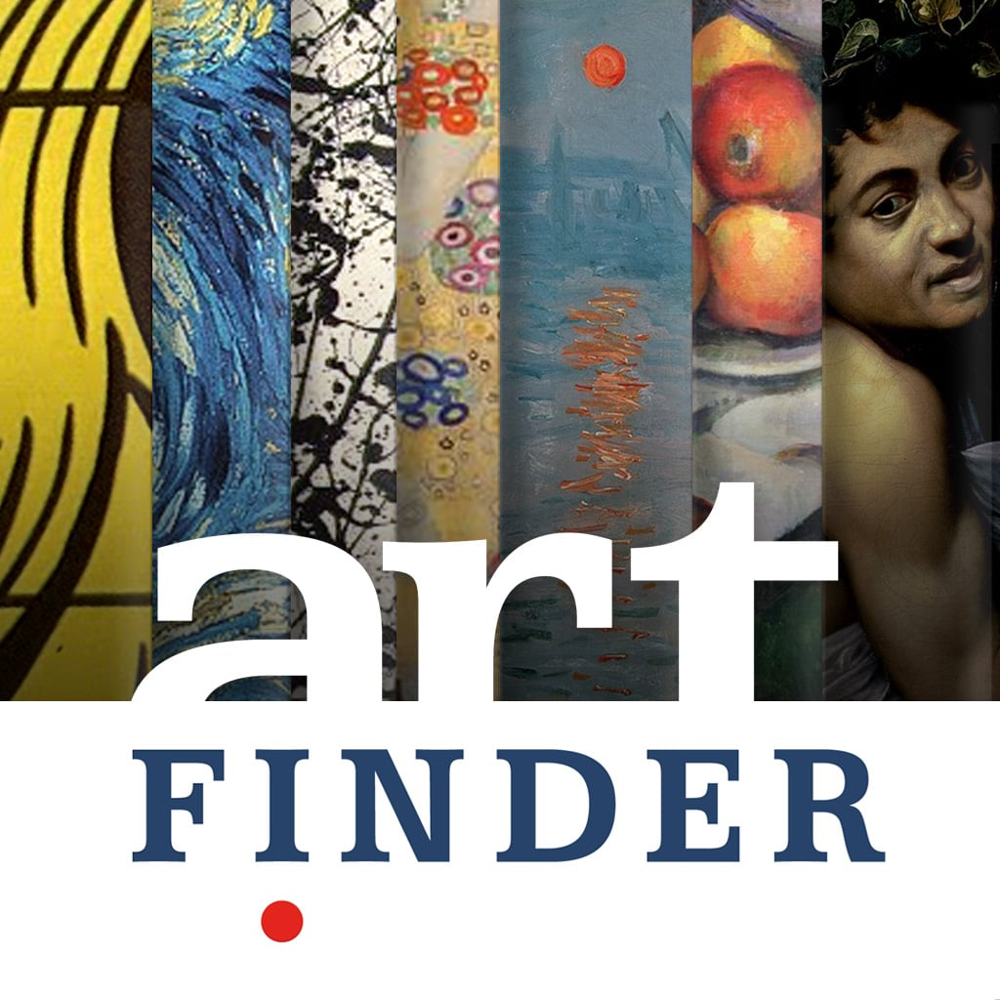

Speaking (IRL)
Having, at a few events for different teams been speaking; helping coach/mentor, giving talks, the following talk, different library choices in design & development; how they can make for better Apps, applications, happenings; you get the picture!
Emoji in Happenings
Within different keyboards of communication; Emoji is one area having spoken can change into, "wry". The area of character expression even now has been in film, animation, movies and more... different groups can be seen sharing Emoji interacted with viewers, readers, listeners, chatter; creating, even-sharing emoji–emotes, for more reasons than simply personalisation 📇
Contact: Kai Vong <kai.vong at gmail.com>
External Links
Previous Looks
previous iterations for similar pages


- 


 This license lets others reuse the work for any purpose, including commercially; however, it cannot be shared with others in adapted form, and credit must be provided to you.
This license lets others reuse the work for any purpose, including commercially; however, it cannot be shared with others in adapted form, and credit must be provided to you.